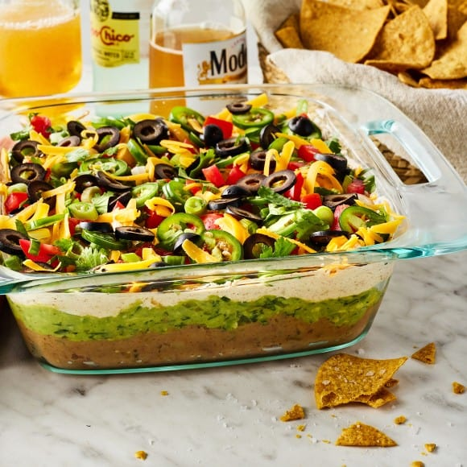

Home
7 Layer Dip

Description
7 layer dip might be my favorite party appetizer of all time. If you’re not familiar, this delicious dip combines creamy refried beans with
zesty avocado, taco-spiced sour cream, tangy cheddar cheese, and loads of fresh
fixings. It’s like bean dip meets guacamole meets pico de gallo and more. I mean,
come on—pass the tortilla chips, please!
Ingredients
- 1 (16-ounce) can refried beans, or 2 cups homemade refried beans
- ¾ cup salsa
- ½ teaspoon sea salt
- 2 avocados
- ½ cup chopped fresh cilantro
- 2 jalapeño peppers, 1 finely chopped, 1 thinly sliced
- 2 tablespoons fresh lime juice
- 16 ounces sour cream
- 1 (1-ounce) packet taco seasoning, 3 tablespoons
- 1½ cups grated sharp cheddar cheese
- 1 roma tomato, diced
- 1 bunch scallions, chopped
- 1 (2.25-ounce) can sliced black olives, drained, optional
- Tortilla chips, for serving
Steps
- In a medium bowl, stir together the refried beans, ½ cup of the salsa, and ¼
teaspoon of the salt.
- In another medium bowl, mash the avocados with the remaining ¼ cup salsa. Add
half the cilantro, the finely chopped jalapeño, the lime juice, and the
remaining ¼ teaspoon salt and stir to combine.
- In a third medium bowl, stir together the sour cream and taco seasoning.
- To assemble the dip, evenly spread the refried bean mixture at the bottom of
an 8x8-inch baking dish or similarly sized serving dish. Spread the avocado
mixture into an even layer on top, then spread the sour cream mixture into
another even layer on top of that. Evenly sprinkle with the cheese, then top
with the tomatoes, scallions, jalapeño slices, remaining cilantro, and black
olives, if using.
- Serve with tortilla chips.